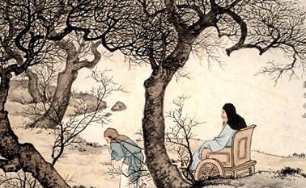

芦衣顺母

闵损，字子骞，春秋时期鲁国人，孔子的弟子，在孔门中以德行与颜渊并称。孔子曾赞扬他说：“孝哉，闵子骞！”(《论语?先进》)。他生母早死，父亲娶了后妻，又生了两个儿子。继母经常虐待他，冬天，两个弟弟穿着用棉花做的冬衣，却给他穿用芦花做的“棉衣”。一天，父亲出门，闵损牵车时因寒冷打颤，将绳子掉落地上，遭到父亲的斥责和鞭打，芦花随着打破的衣缝飞了出来，父亲方知闵损受到虐待。父亲返回家，要休逐后妻。闵损跪求父亲饶恕继母，说：“留下母亲只是我一个人受冷，休了母亲三个孩子都要挨冻。”父亲十分感动，就依了他。继母听说，悔恨知错，从此对待他如亲子。